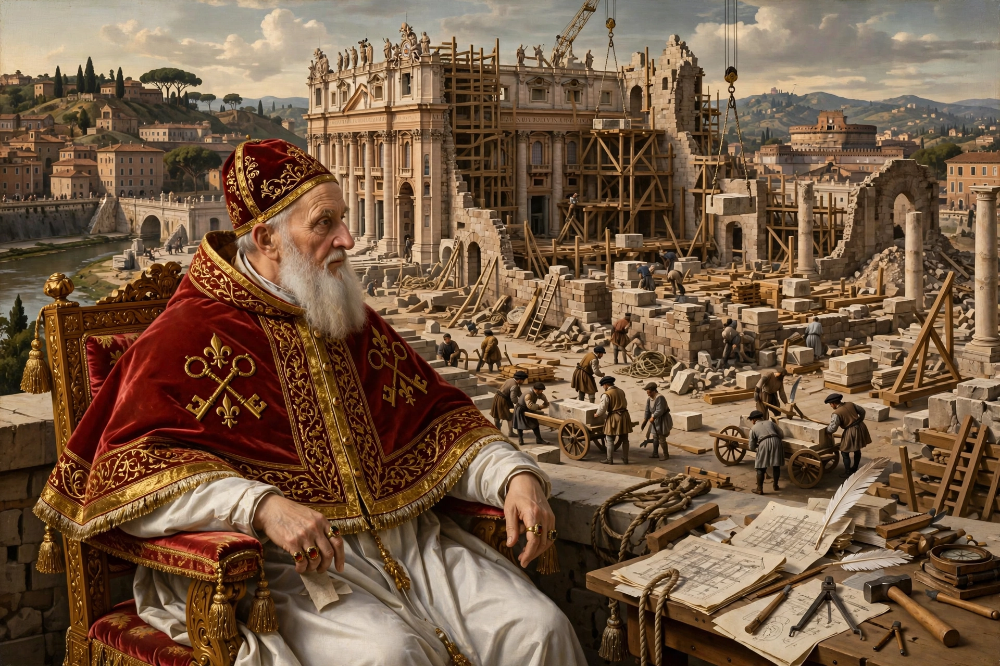

Pope Alexander VI
From Wikipedia, the free encyclopedia
| Pope Alexander VI | |
| Papacy began | 11 August 1492 |
|---|---|
| Papacy ended | 18 August 1503 |
| Predecessor | Innocent VIII |
| Successor | Pius III |
| Born | Rodrigo de Borja, 1 January 1431, Xàtiva, Kingdom of Valencia |
| Died | 18 August 1503 (aged 72), Rome |
| Family | House of Borgia; children included Cesare and Lucrezia Borgia |

Alexander VI, the Borgia pope (1492–1503)
Pope Alexander VI (born Rodrigo de Borja; 1 January 1431 – 18 August 1503) was head of the Catholic Church and ruler of the Papal States from 11 August 1492 until his death in 1503. Born into the prominent Borgia family in Xàtiva in the Kingdom of Valencia, he rose through the Church under his uncle, Pope Callixtus III, serving as vice-chancellor for five popes.
Pontificate
Alexander's election was secured amid charges of simony. His pontificate combined able administration and diplomacy with notorious nepotism: he advanced his children, above all Cesare Borgia, whom he made a cardinal and then released to pursue a military career carving out a state in the Romagna, and Lucrezia Borgia, whose marriages served Borgia alliances. In 1493 his bulls Inter caetera divided the newly discovered lands outside Europe between Spain and Portugal, a line adjusted by the Treaty of Tordesillas (1494).
Controversies
Alexander confronted the fiery Dominican friar Girolamo Savonarola, whom he excommunicated; Savonarola was executed in Florence in 1498. Contemporary accounts and later reputation made Alexander the archetype of the corrupt Renaissance pope — associated with simony, lavish banquets, and scandal — though modern historians debate how much of the hostile tradition derives from his enemies. France's invasion of Italy under Charles VIII (1494) and later Louis XII repeatedly drew the pope into the Italian Wars.
Death
Alexander died in Rome on 18 August 1503, days after dining with Cardinal Adriano Castellesi; fever — possibly malaria, possibly poison — was blamed. Cesare fell ill at the same time, crippling his position, and the Borgia ascendancy collapsed.